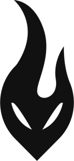

2023

Découverte de l’esport & InFuria
Je découvre réellement l’écosystème esport et rejoins InFuria Esport. J’y réalise énormément de projets en bénévolat et j’apprends surtout à produire pour une structure, une équipe et une communauté avec de vraies contraintes.